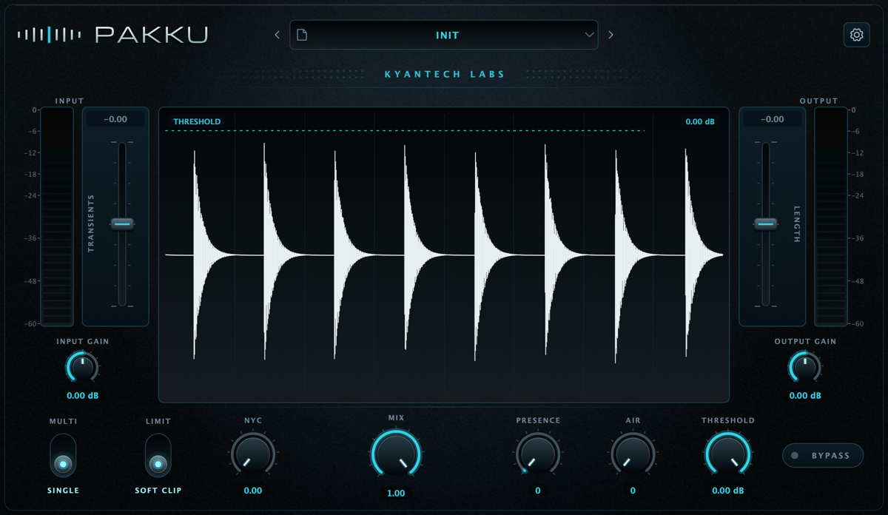
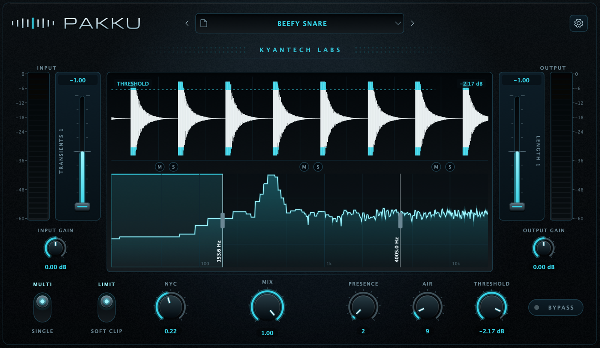
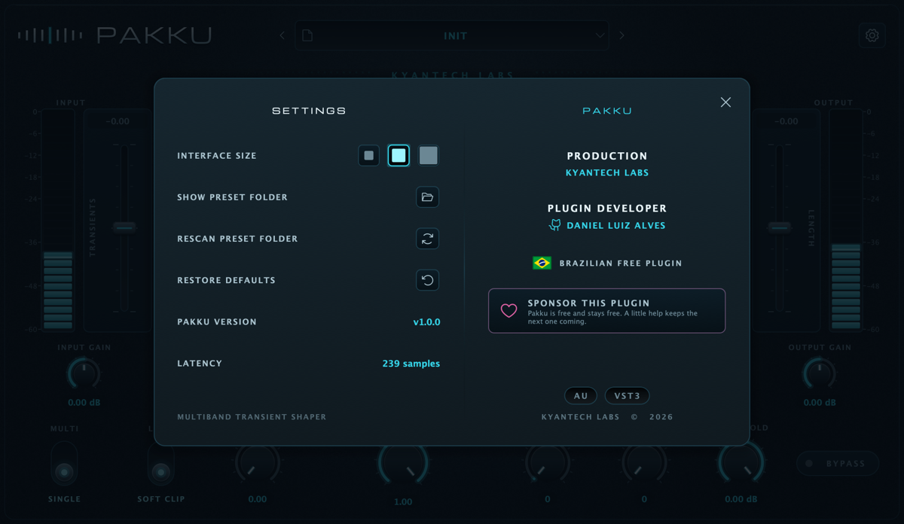

Three bands. Or none.
Work in multiband or give the waveform the full display in full-range mode. One pair of faders follows the selected band.
Multiband transient shaper 01
Own the impact.
Shape attack and sustain across three bands. Then push everything to the edge.

A transient shaper that works where the sound actually happens.
Pakku splits the signal into three bands through a fourth-order Linkwitz–Riley crossover. You decide where the kick bites, where the snare breathes and how hard the bus can take it.
Tight lows. Mids that cut through. Alive highs. Each range gets exactly what it needs — without destroying what already works.

From the first peak to the last dB, every stage is built to keep the punch under your command.
Work in multiband or give the waveform the full display in full-range mode. One pair of faders follows the selected band.
Drag the line directly over the waveform or use the knob. Two gestures, one parameter, zero friction.
Limiter with 5 ms lookahead or soft clip with a knee below threshold — both running at 4× linear-phase oversampling.
The dry path is latency compensated. Turn Mix with confidence, without comb filtering hollowing out the body.
Three interface sizes, presets in an open format and every choice saved with the session. Get in, get it done, move on.
Open the full manual
Pakku v1.0.0
Free. Open source. No account, no license, no ritual.
Unsigned builds — read the installation instructions in the manual.